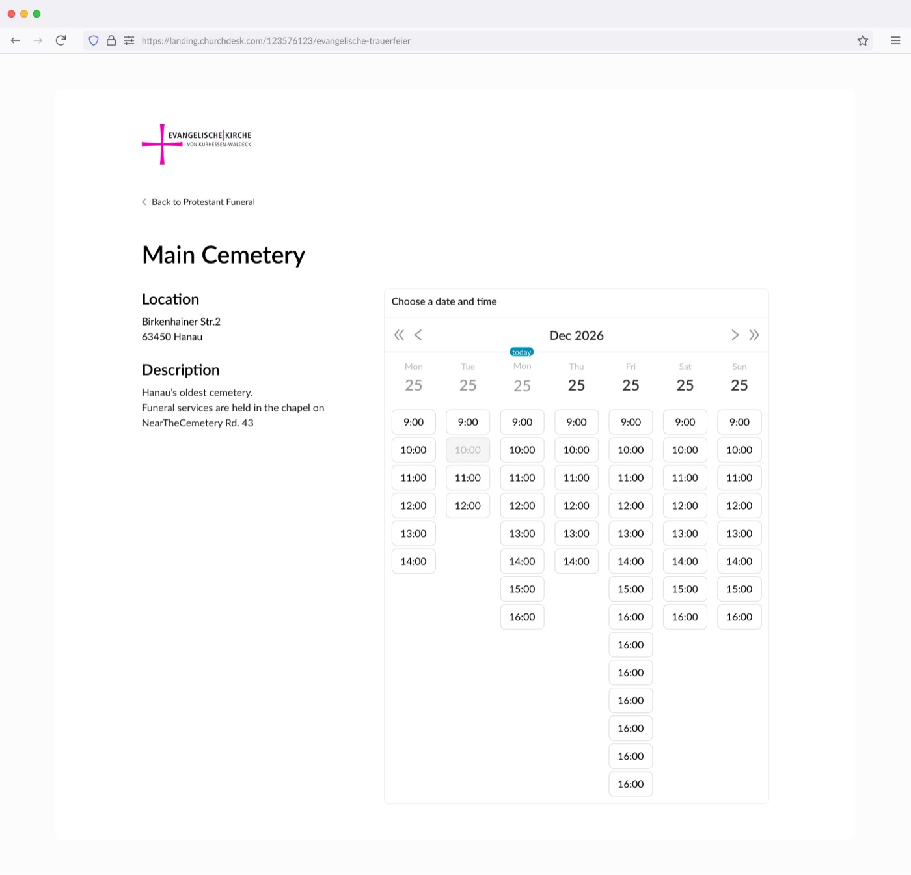
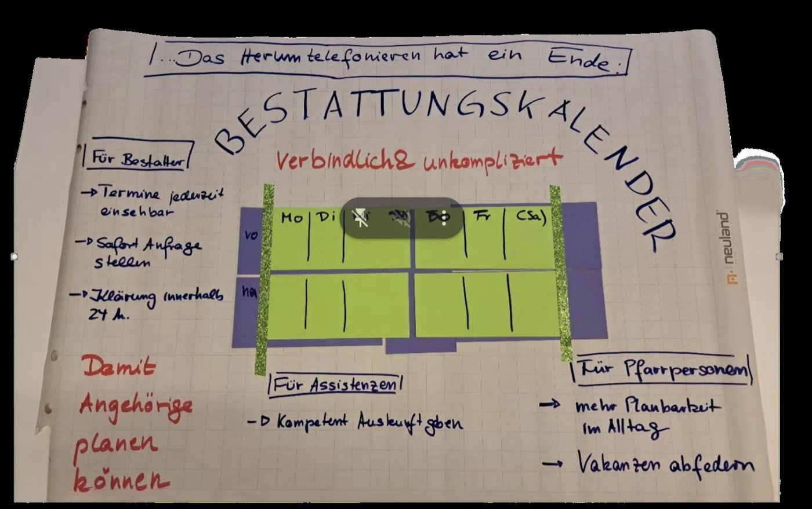

Three groups. One booking flow.

Three groups. One booking flow.

"Verbindlich und unkompliziert."
Binding and uncomplicated.
Fast for the family.
Never a burden on the priest.
Never automatic. Accept — or decline.
Every future booking type — rooms, baptisms, counseling — reuses it.